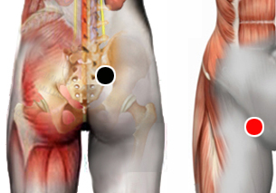

Norwalk
Pares
saco de douglas - vena femoral
cisterna de quilo - cisterna de quilo
dorsal 12 - lumbar 1
cresta iliaca - cuadriceps
art. sacroiliaca - art. sacroiliaca

Generalidades:
Virus ARN. Afecta toda la cavidad pélvica. Provoca quiste ovárico, inflamaciones en pelvis derecha o en ganglios intestinales. Causante de Gastroenteritis o Apendicitis. Asociado con hongos o bacterias puede ser mortal. Asociado con Pneumosystis carinii (condral) daña severamente al pulmón.
El nombre lo recibe del condado de Norwalk, en Ohio, E.E.U.U. donde en 1968 se dió un brote en una escuela causando varios casos de gastroenteritis en niños. También se le conoce (en forma erronea), como Norovirus. Para la alopatía es un virus que no representa gran riesgo: se presenta con vómito, náusea, dolor abdominal, fiebre leve, la infección normalmente cede en unos 2 ó 3 días.
Transmisión
Se contagia por agua o alimentos contaminados (en especial mariscos) o por contacto con heces o vómito del enfermo. El virus sobrevive en el medio ambiente en superficies, platos, manos, ropa, etc. Posible contagio por vía aerea al estar cerca del vómito del enfermo.